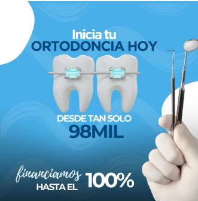

Sonrisas en proceso
Público
- Edades: Padres entre 30–55 (target principal) + adolescentes 14–22 (target secundario)
- Geo: Sector sur de Medellín — Poblado, Envigado, Sabaneta, Itagüí
- Intereses: Familia, salud dental, ortodoncia, brackets, ortodoncia invisible
Mensaje clave
El tratamiento ortodóntico es una decisión familiar. La clínica acompaña a padres y adolescentes con asesoría personalizada en El Poblado.
Copy sugerido
Te asesoramos sin compromiso. Atendemos en El Poblado.
👉 Escríbenos por WhatsApp.
Diferenciador
Ubicación premium en El Poblado · atención cercana · enfoque familiar. Resaltar tranquilidad del tratamiento, no precio.
Ideas creativas

Concepto
Gancho que toca el dolor del bolsillo: comunicar que iniciar la ortodoncia es accesible para todos gracias a las cuotas mensuales. Ataca el principal freno mental ("no me alcanza") y lo convierte en una posibilidad real. No es una promo — es quitar la barrera del precio. La idea es replicar este enfoque ajustando la estética visual a la identidad de K13 (logo, paleta y tipografía propias).
Mensaje principal
"Inicia tu ortodoncia desde $XX.XXX al mes. Cuotas que sí caben en tu presupuesto." Acompañado de visual de brackets/sonrisa + CTA a WhatsApp.
- ¿Desde cuánto son las cuotas mensuales reales de ortodoncia?
- ¿Qué convenios de financiación tienen activos actualmente?
- En el sitio web aparece Sistecrédito — ¿sigue activo el convenio?
- ¿Cómo funciona la financiación con Welli? (montos, plazos, requisitos)
Concepto
Reel educativo de auto-diagnóstico: lista las señales que indican que una persona podría necesitar ortodoncia sin saberlo. El espectador se identifica con uno o varios síntomas, se prende la alerta y eso activa la decisión de dar el primer paso (escribir a WhatsApp).
Mensaje principal
"¿Seguro que no necesitas ortodoncia? Puede que estés ignorando señales importantes." Cierra invitando a agendar valoración presencial en la clínica escribiendo por WhatsApp (no hay valoraciones virtuales por ahora).
Por qué funciona
No vende — informa. Llega a personas que no se consideraban candidatos a ortodoncia y les abre el ojo. Reduce el filtro mental "eso no es para mí".
Concepto
Mismo enfoque que Idea 02 (tocar el dolor) pero específico a la mordida: muestra visualmente los distintos tipos de mordida y sonrisa (sobremordida, mordida cruzada, abierta, etc.) para que la persona se reconozca en pantalla y diga "esa soy yo". Activa la urgencia al ver su problema reflejado.
Mensaje principal
"Necesitas ortodoncia si tu mordida se ve así." Cierra invitando a agendar valoración presencial por WhatsApp para una revisión profesional.
Por qué funciona
El componente visual es lo que vende — la persona no necesita un diagnóstico verbal, ve su caso y se identifica. Funciona muy bien para target adolescente/joven adulto que suele ignorar problemas de mordida hasta verlos en pantalla.
Concepto
Referencia: "6 pasos" del proceso de diseño de sonrisa de Clínica Sens. La idea es tomar algunos ángulos y la estructura paso-a-paso de esta referencia y adaptarlos al proceso de ortodoncia en K13: desde la primera valoración hasta el alta del tratamiento. Reduce la fricción al desmitificar el proceso y muestra la experiencia real del paciente en la clínica.
Estructura del reel
Formato: la doctora a cámara explicando el proceso paso a paso, apoyada con imágenes de la clínica, instalaciones y equipo profesional. No se graban procedimientos reales con pacientes — a menos que la clínica nos suministre videos o imágenes de algún tratamiento que ya tengan, o puedan grabarlos en estos días.
- Llegada y recepción en consultorio
- Valoración inicial y exámenes (radiografías, escaneo)
- Plan de tratamiento personalizado
- Colocación de brackets (metálicos / estéticos / invisibles)
- Controles periódicos: frecuencia y qué se hace en cada uno
- Alta y retención
Por qué funciona
El miedo a lo desconocido es uno de los principales frenos para iniciar un tratamiento. Enunciar el proceso completo de manera amigable genera confianza y deja a K13 como la opción "ya sé qué esperar". También funciona como vitrina de la clínica.
- ¿Cuáles son los exámenes iniciales que hacen al paciente?
- ¿Cada cuánto son los controles durante el tratamiento?
- ¿Cómo deciden si el paciente necesita brackets invisibles, metálicos, estéticos o autoligado?
- ¿Qué tipos de brackets manejan exactamente en K13?
- ¿Hay un protocolo específico K13 que diferencie del resto?
- ¿Pueden compartir fotos del consultorio, instalaciones y equipo profesional para apoyar la pieza?
Concepto
Reel listicle directo: 3 razones claras para iniciar la ortodoncia en K13 hoy. Formato consumible en 15-20s, beneficios concretos, cierre con CTA fuerte. Es la pieza más comercial del set — la que cierra venta a quien ya está considerando.
Estructura del reel
Formato: 3 cards rápidos (motion + texto en pantalla) o doctora a cámara con cortes secos.
- 1. Ubicación premium en El Poblado · ambiente cálido (no se siente sala de hospital)
- 2. Facilidad de pago — alianza con Welli y Sistecrédito
- 3. Atención personalizada desde el primer momento
Mensaje principal · Cierre
"Tu sonrisa nueva empieza hoy. Agenda tu valoración por WhatsApp." Acompañado del logo K13 + CTA grande.
Por qué funciona
Es el clásico que mejor convierte en Meta para clínicas: corto, claro, con beneficios tangibles y CTA explícito. Va al punto sin rodeos para quien ya está en intención de búsqueda.
- ¿Cuántos años de experiencia tiene la doctora? (para reforzar el punto 3)
- ¿Algo único del ambiente / consultorio que destacar en el punto 1? (decoración, ubicación específica, comodidades)
- Confirmación del precio de entrada en cuotas (depende de respuestas de Idea 01)